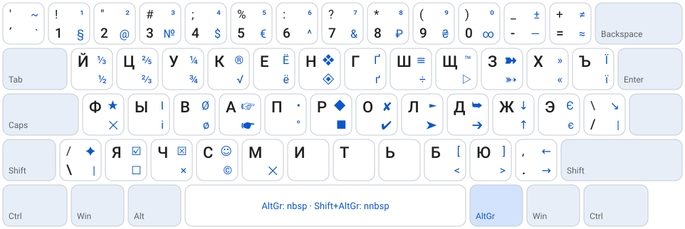

Two layouts, four languages
A Russian layout that also has the Ukrainian letters, and an English layout that also has the German ones. Letters stay where you are used to them; everything extra is typed with the right Alt key. For Windows, free of charge.
Version 2611 of 17 Nov 2026 · Windows 10 and 11 · how to install
What they look like
Each key shows up to four characters: bottom left is the key itself, top left is with Shift, blue on the right is with the right Alt key (the upper one also needs Shift).


Why it is laid out this way
Letters stay in place
ЙЦУКЕН and QWERTY are unchanged. Everything new sits on the right Alt key only, so your hands type as before from the first minute.
Ukrainian letters next to similar ones
ґ on Г, і on Ы, ї on Ъ, є on Э, all with the right Alt key. Russian and Ukrainian live in one layout, no switching between them.
Umlauts on their own letters
ä on A, ö on O, ü on U, ß on S. German quotes „“ sit on the right Alt key next to the brackets, guillemets « » on the key beside them.
Punctuation does not jump
Full stop and comma share one key, right of Ю, in both layouts. The symbols above the digits match too. Switch the language and your fingers find the same place.
€, ₴, №, § on the digits
With the right Alt key: € on 5, ₴ on 9, № on 3, § on 1, @ on 2. With Shift and the right Alt key you get superscripts: m², m³.
Spaces that keep words together
Right Alt plus space gives a non-breaking space, so “10 €” never splits across lines. With Shift you get a narrow one for “1 000” and “z. B.”.
é, á, š, č in two keystrokes
In EnDe: Shift, right Alt and ', then a letter gives é, á, ó. Shift, right Alt and M, then a letter gives š, č, ž. For René, José, Dvořák.
The key left of 1 is free
It types the rare character ʹ, which never appears in normal text, so it is a good key for starting voice input. The usual apostrophe is on the same key with Shift.
Check boxes, arrows, fractions
☐ ☑ ☒ ✔ on Z, X, J, arrows → ← ↑ ↓, fractions ½ ¾ on the top letter row.
How to install
- Download the archive of the layout you need with a button at the top and unpack it.
- Run setup.exe and allow it when Windows asks for administrator rights.
- Sign out of Windows and sign in again (or restart the computer).
- Open Settings, then “Time & language” and “Language & region”. Next to your language press “…”, then “Language options” and “Add a keyboard”, and choose Russia-Ua 20261117 (for Russian) or LAT-DEU 20261117 (for English).
To remove a layout, open Settings, then “Apps” and “Installed apps”, find its name and click “Uninstall”.